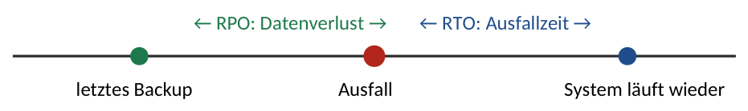

3Storage, RAID & Backup
- Netto-Kapazität: RAID 5 = (n−1)×C · RAID 6 = (n−2)×C · RAID 10 = (n/2)×C · RAID 15 = (n/2 − 1)×C. Hot-Spare vorher abziehen!
- RAID ersetzt kein Backup (schützt nicht vor Löschen, Ransomware, Brand).
- Voll / differenziell (seit letzter Vollsicherung) / inkrementell (seit letzter beliebiger Sicherung).
- RPO = maximal tolerierter Datenverlust (Zeitraum) · RTO = maximal tolerierte Wiederherstellungsdauer.
- 3-2-1-Regel: 3 Kopien, 2 Medientypen, 1 außer Haus. Dazu Air Gap/unveränderbare Backups gegen Ransomware.
Speicherarchitekturen: DAS, NAS, SAN
| Typ | Funktionsweise | Zugriff | Protokolle |
|---|---|---|---|
| DAS Direct Attached Storage | Platten direkt im/am Server | Block | SATA, SAS, NVMe |
| NAS Network Attached Storage | Dateiserver im LAN, eigenes Dateisystem | Datei | SMB (TCP 445), NFS (TCP 2049) |
| SAN Storage Area Network | eigenes Speichernetz, Server sieht „lokale“ Platten (LUNs) | Block | Fibre Channel, iSCSI (TCP 3260) |
Faustregel: NAS = Dateien teilen, SAN = Blockspeicher für Server/VMs/Datenbanken. Object Storage (S3) speichert Objekte mit Metadaten über HTTP-API, typisch in der Cloud und für Backups.
RAID-Level
| Level | Prinzip | min. Platten | verkraftet | Netto (n Platten à C) |
|---|---|---|---|---|
| JBOD | Platten aneinandergehängt | 1 | 0 | Summe aller Platten |
| RAID 0 | Striping (Daten verteilt) | 2 | 0 | n × C |
| RAID 1 | Spiegelung | 2 | 1 (von 2) | C (bei 2 Platten) |
| RAID 5 | Striping + 1 verteilte Parität | 3 | 1 | (n − 1) × C |
| RAID 6 | Striping + 2 Paritäten | 4 | 2 | (n − 2) × C |
| RAID 10 | Stripe über Spiegelpaare (1+0) | 4 | 1 pro Paar | (n / 2) × C |
| RAID 15 | Spiegelung + Parität (1+5) | 6 | mind. 3 beliebige | (n / 2 − 1) × C |
- Hot-Spare: eingebaute Reserveplatte ohne Daten. Fällt eine Platte aus, startet der Rebuild sofort automatisch. Sie zählt nicht zur Nettokapazität.
- Rebuild: Wiederherstellen der Redundanz. Während des Rebuilds ist das RAID langsamer und (bei RAID 5) ungeschützt. Deshalb bei großen Platten RAID 6 bevorzugen.
- Performance: RAID 10 ist bei Schreiblast (Datenbanken, VMs) am schnellsten. RAID 5/6 schreiben langsamer wegen der Paritätsberechnung.
Ein Server hat 8 Festplatten à 4 TiB. Eine davon ist als Hot-Spare konfiguriert, die übrigen bilden ein RAID 6. Nettokapazität?
- Hot-Spare abziehen: 8 − 1 = 7 Platten im RAID
- RAID 6: (7 − 2) × 4 TiB = 20 TiB
- Ausfallsicherheit: 2 Platten gleichzeitig + Hot-Spare springt sofort ein.
Backup-Verfahren
| Verfahren | Was wird gesichert? | Sicherungsdauer / Platz | Wiederherstellung braucht |
|---|---|---|---|
| Vollsicherung | alle Daten | am längsten / am meisten | nur die letzte Vollsicherung (schnellste Wiederherstellung) |
| Differenziell | alle Änderungen seit der letzten Vollsicherung | wächst täglich an | Vollsicherung + letzte differenzielle |
| Inkrementell | Änderungen seit der letzten Sicherung jeglicher Art | am kürzesten / am wenigsten | Vollsicherung + alle Inkremente seitdem (langsamste Wiederherstellung) |
Vollsicherung jeden Sonntag, werktags abends eine Teilsicherung. Am Donnerstag um 10 Uhr fällt der Server aus.
- Inkrementell: Voll (So) + Inkrement Mo + Di + Mi = 4 Sicherungen
- Differenziell: Voll (So) + Differenz Mi = 2 Sicherungen
- Datenverlust in beiden Fällen: alles seit Mittwochabend (RPO ≈ 1 Tag).
Zielgrößen: RPO und RTO

- RPO (Recovery Point Objective): Wie viele Daten dürfen maximal verloren gehen? Bestimmt das Sicherungsintervall. RPO 1 h → mindestens stündlich sichern bzw. replizieren.
- RTO (Recovery Time Objective): Wie lange darf die Wiederherstellung maximal dauern? Bestimmt Verfahren und Technik (Vollsicherung, schnelle Medien, Standby-System).
Strategien und Begriffe
- 3-2-1-Regel (erweitert 3-2-1-1-0): 3 Kopien, 2 verschiedene Medien, 1 außer Haus, 1 offline/unveränderbar, 0 Fehler beim Wiederherstellungstest.
- Großvater-Vater-Sohn (GVS): Rotationsschema. Söhne = Tagessicherungen (z. B. Mo–Do), Väter = Wochensicherungen (Fr), Großväter = Monatssicherungen. Klassisch 4 + 4 + 12 = 20 Medien für ein Jahr Rückgriff (Varianten je nach Aufgabenstellung).
- Air Gap: Backupmedium physisch vom Netz getrennt (z. B. ausgelagertes LTO-Band) → Ransomware kommt nicht heran.
- Immutable Backup / WORM: Sicherung kann für eine festgelegte Zeit nicht verändert oder gelöscht werden.
- Deduplizierung: identische Datenblöcke werden nur einmal gespeichert (oft Faktor 10–30 Ersparnis bei Backups vieler ähnlicher VMs).
- LTO-Band: günstig pro TB, lange haltbar, transportabel, Air Gap möglich. Nachteil: sequenzieller, langsamer Zugriff.
- Restore-Test: Ein Backup gilt erst als funktionierend, wenn die Wiederherstellung getestet wurde.
| Begriff | Zweck | Merkmal |
|---|---|---|
| Backup | Wiederherstellung nach Datenverlust | kurz- bis mittelfristig, mehrere Versionen |
| Archivierung | langfristige Aufbewahrung (z. B. 10 Jahre nach HGB/AO) | revisionssicher, unveränderbar; Daten werden oft aus dem aktiven System entfernt |
| Snapshot | schneller Rücksprung vor Änderungen | gleicher Storage, kein Backup |
| Replikation | Hochverfügbarkeit, zweiter Standort | überträgt auch Fehler und Löschungen sofort → kein Backup |
Speicherverwaltung und revisionssichere Archivierung
- Thick Provisioning: Speicher wird beim Anlegen (z. B. einer 500-GiB-VM-Disk) sofort komplett reserviert – planbar, aber Platz liegt brach. Thin Provisioning: belegt wird nur, was geschrieben ist; erlaubt Überbuchung. Risiko: Ist der physische Speicher voll, stehen alle VMs → Füllstand überwachen, Schwellenwerte alarmieren.
- Quotas: Speichergrenze pro Benutzer, Gruppe oder Ordner; Soft Limit = Warnung, Hard Limit = Schreiben wird verweigert.
- Datei- vs. blockbasierte Sicherung: dateibasiert = einzelne Dateien/Ordner, gezielter Restore einzelner Dateien; blockbasiert = ganze Datenträger bzw. Images, schnell, ideal für komplette Systeme und VMs.
- Medien schnell → langsam (D2D2T / D2D2C): erst auf Disk sichern (schneller Restore), danach auf Band oder in die Cloud (lange Aufbewahrung, Offsite). Medienrotation nach Generationenprinzip oder FIFO (das älteste Medium wird überschrieben).
- Veränderlich vs. unveränderlich: Unveränderliche Sicherungen (WORM/Immutable, s. o.) kann bis Fristende niemand löschen oder verschlüsseln – auch Ransomware nicht.
- Synchronisation ist kein Backup: OneDrive, Nextcloud oder
rsync --deleteübertragen auch Löschungen und Verschlüsselung sofort; ein Backup hat getrennte, versionierte Stände. - Lagerung: Sicherungsmedien nie im selben Raum/Brandabschnitt wie die Server, besser in einem anderen Gebäude.
- Backup- und Wiederherstellungsdauer = Datenmenge (nach Komprimierung) ÷ effektive Datenrate (→ R2 in Kap. 23).
Revisionssichere Archivierung (GoBD): geschäftsrelevante Daten vollständig, unveränderbar, nachvollziehbar und jederzeit lesbar aufbewahren. Aufbewahrungsfristen (HGB/AO): Bücher, Inventare und Jahresabschlüsse 10 Jahre, Buchungsbelege (z. B. Rechnungen) 8 Jahre (seit 2025), Handels- und Geschäftsbriefe 6 Jahre. Personenbezogene Daten danach löschen (DSGVO, Löschkonzept).
- Differenziell und inkrementell verwechseln. Merksatz: Differenziell = seit Dem Vollbackup.
- Hot-Spare in die Nettokapazität einrechnen.
- TB (Hersteller, 10¹²) und TiB (Betriebssystem, 2⁴⁰) mischen. Eine „4-TB-Platte“ zeigt im OS ca. 3,64 TiB.
- „RAID ist ein Backup“ → immer falsch.
| Dateisystem | Zuordnungseinheit = Clustergröße: klein → wenig Verschnitt bei vielen kleinen Dateien (Office, Mail); groß → schneller bei großen Dateien (Video, Backups, VM-Images) 2× |
| Platz sparen | Deduplizierung = identische Blöcke nur einmal speichern (viele gleiche VMs, Backups) 2× · Komprimierung = Daten platzsparend kodieren (Logs, Text gut; JPEG/Video kaum) 1× |
| Band | LTFS = Band wie Laufwerk mit Ordnern nutzbar, herstellerunabhängig lesbar 1× · außerdem im Text: LTO |
| Backup-Details | Archivbit = Markierung „seit letzter Sicherung geändert“: Voll und inkrementell setzen es zurück, differenziell nicht 1× · GVS = Sohn = täglich, Vater = wöchentlich, Großvater = monatlich 1× · Sicherung vs. Archivierung = Sicherung = Kopie zur Wiederherstellung, wird überschrieben · Archivierung = langfristig, unveränderbar, Original wird ausgelagert 2× · Organisatorisch = Backup-Plan mit Verantwortlichen, Restore-Tests, Lagerung außer Haus/Tresor, Dokumentation 1× |
| RAID-Spezial | JBOD = Platten nur aneinandergehängt: keine Redundanz, kein Tempo-Gewinn, ein Ausfall = Datenverlust 1× · außerdem im Text: RAID 6 vs. 5, Hot-Spare, revisionssicher |
Ü3.1 Nettokapazität: a) RAID 5 aus 6 × 2 TiB · b) RAID 10 aus 8 × 1,92 TiB · c) RAID 15 aus 10 × 4 TiB · d) 12 Platten à 8 TiB, davon 2 Hot-Spares, Rest RAID 6.
Ü3.2 Ein SAN ist mit 4 TiB belegt. Pro Jahr kommen 650 GiB hinzu. In 5 Jahren darf das SAN höchstens zu 70 % belegt sein. Welche nutzbare Kapazität (in TiB) wird benötigt?
Ü3.3 Die Geschäftsführung fordert: maximal 2 Stunden Datenverlust, System nach spätestens 4 Stunden wieder online. Benenne die zwei Kennzahlen und leite je eine Maßnahme ab.
Lösungen Kapitel 3
Ü3.1 a) (6−1)×2 = 10 TiB · b) 8/2 × 1,92 = 7,68 TiB · c) (10/2 − 1) × 4 = 16 TiB · d) 12 − 2 = 10 Platten → (10−2) × 8 = 64 TiB
Ü3.2 Bedarf: 4 TiB = 4.096 GiB + 5 × 650 GiB = 7.346 GiB. Das sind 70 % → 7.346 / 0,7 = 10.494,3 GiB ÷ 1.024 = ca. 10,25 TiB (in der Praxis nächste Ausbaustufe wählen).
Ü3.3 RPO = 2 h → mindestens alle 2 Stunden sichern (inkrementelle Sicherung auf getrenntes Medium). RTO = 4 h → schnelle Wiederherstellung sicherstellen: Backup auf Disk statt Band, dokumentierter und getesteter Restore-Ablauf, ggf. Standby-System.